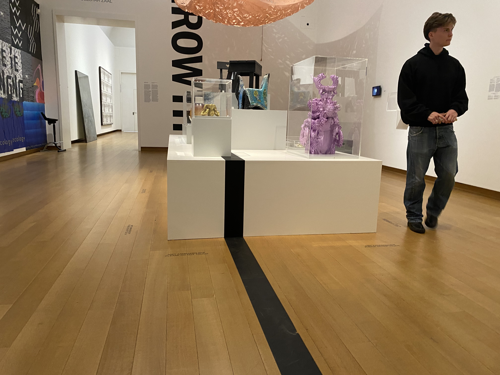
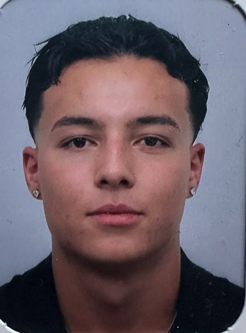

Niek Groenewold
Niek is de host die altijd op zoek is naar de onderliggende oorzaken van maatschappelijke verdeeldheid. Zijn nieuwsgierigheid en analytische blik helpen hem om diep in de thema’s van polarisatie te duiken en de verschillende standpunten te verkennen.

Bryan Kapel
Bryan brengt de balans in het gesprek met zijn vermogen om verschillende perspectieven te combineren. Hij heeft een talent voor het begrijpen van de menselijke kant van polarisatie en belicht de menselijke verhalen achter meningsverschillen.

Jonah Pierolie
Jonah is de kritische denker die geen onderwerp uit de weg gaat. Zijn scherpe geest en ervaring met maatschappelijke vraagstukken maken hem tot een krachtige stem in het gesprek over polarisatie.